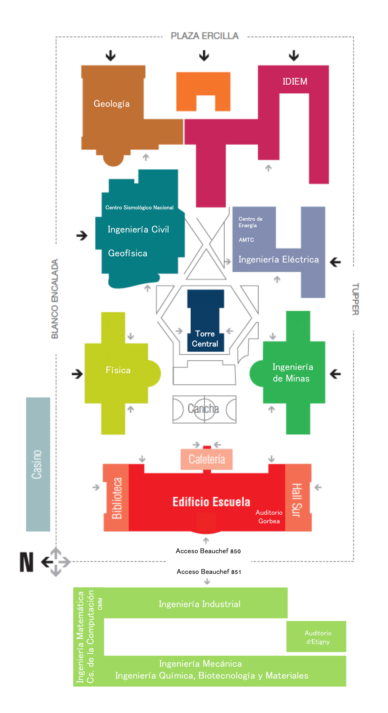

Modo Claro/Oscuro
Mapa de Salas - Tótem FCFM

Selecciona tu sala para ver la ubicación en el mapa
Elegir sala:
-- Selecciona una sala --
Sala 111 - Edificio Norte
B06 - Subterráneo Torre Central
Biblioteca Central
Aula Magna - Edificio Escuela
Escanea este código para abrir la ruta en tu celular: